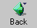
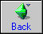
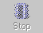
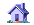
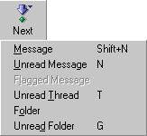
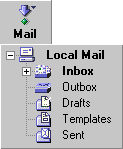

Menu Button Requirements
Written by Eric Vaughan
Last updated 3/12/99
Overview
This document covers two related UI elements: Image Buttons and
Menu Buttons.
An Image Button is a button capable of displaying both an
image (gif, jpeg, etc) and descriptive text within the boundary of
the button. Clicking anywhere within the boundary of the object
triggers an action (normally a JavaScript onClick handler). The
button can be enabled or disabled, and have a different appearance
when the mouse is inside its border.
A Menu Button extends an Image Button to allow for a menu
or tree to popdown from the button when the mouse is down for a
certain amount of time (referred to as "click and hold"). An example
of a Menu Button in 4.X is the "Back" button which pops down a menu
containing the window history on a click-and-hold. Mozilla extends
this notion with the ability to pop down a live tree view.
Requirements
For Image Buttons:
- Manipulation of images and properties through the DOM and
CSS
- Must support the following JavaScript event handlers
- onClick
- onMouseOver
- onBlur
- onChange
- onFocus
- Must support 4 images and
states
|
normal
|

|
rollover
|

|
depressed
|

|
disabled
|

|
- Must support multiple alignment
text
right image left
text left image right
|
|
|
Text bottom image top
|
|
|
|
Text top image top
|
|
|
- If the button is compressed smaller than it can accommodate,
it needs to be able to truncate its text.
|
Right truncation
|
text
right i...
|
|
Left truncation
|
....t image right
|
|
Center truncation
|
text
... left
|
- A context menu should appear with a context click if the
button doesn't have a menu attached to it already.
- Should be able to gray out its image automatically in a
disabled state (without forcing an additional image to be
specified).
For Menu Buttons
Everything an Image Button could do, plus the following:
- show a popdown menu, either on a click or a click-and-hold

- show a popdown tree, either on a click or a click-and-hold

- For the tree, users need to be able to expand or collapse
folders within the tree without it going away. The tree goes away
only when the user clicks outside of the presented tree or on an
element that has no children (a "leaf").
- Children which populate the popdown menu or popdown tree are
specified as children of the Menu Button in the DOM.
- Child content can be generated from an RDF datasource. This
implies that the creation of this child object (be it a tree,
menu, etc) must be fully dynamic. The button should only attempt
to construct the child object when it knows it needs to display
it.